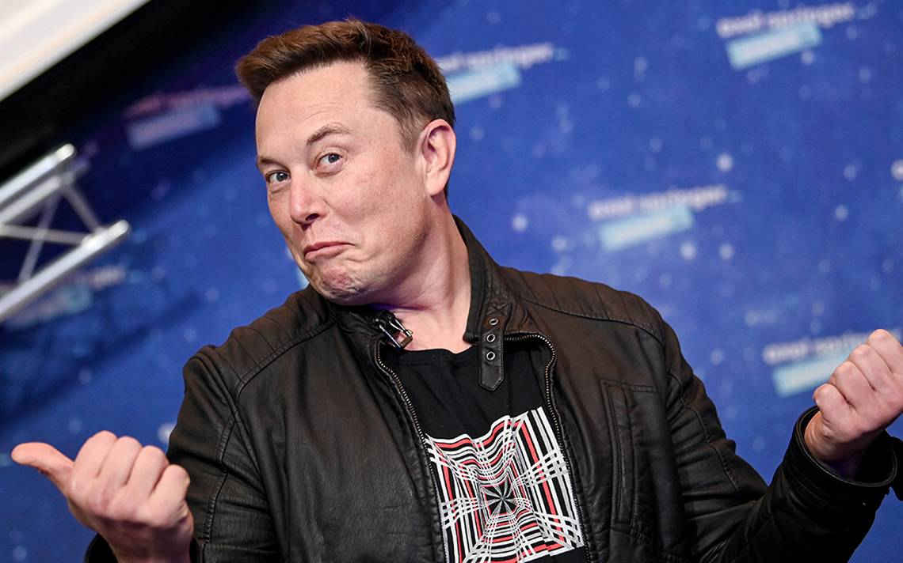

Elon Musk: ingeniero y multimillonario
Elon Musk es el fundador de PayPal y CEO de Tesla Motors, Solar City y SpaceX. Es uno de los personajes más admirados de estos tiempos. Es considerado un líder, un visionario, y sus empresas tienen como misión cambiar el mundo de forma drástica. ¿Qué busca Elon Musk? Algunas de sus metas giran en torno a frenar el proceso de calentamiento global mediante el cambio de combustibles fósiles por energías renovables, sobre todo la energía solar. También piensa en una solución a la posible extinción de la raza humana mediante la evolución hacia una "civilización multiplanetaria" a través de la creación de una colonia humana permanente en el planeta Marte. La revista económica Forbes calcula que actualmente su fortuna supera los 21 mil millones de dólares, y aunque en el listado del 2017 aparecía con una cifra menor -en el puesto 80 de los hombres más ricos del mundo-, este año podría pegar un salto y convertirse en uno de los 30 de mayor riqueza. En diciembre de 2016, este mismo medio aseguró que Musk ocupaba el puesto 21 entre las personas más poderosas del mundo.

Infancia y juventud
Infancia y juventud Elon Musk nació el 28 de junio de 1971 en Pretoria, Sudáfrica. Hijo de Errol Musk, ingeniero sudafricano, y de Maye Musk, nutricionista y modelo canadiense. Su hermana Tosca Musk es fundadora de Musk Entertainment y productora cinematográfica; su hermano, Kimbal, es director ejecutivo de la empresa de publicidad OneRiot. A los 10 años, con su primer ordenador, un Commodore VIC-20, empezó a aprender programación por su propia cuenta. Dos años después, vendió su primer videojuego -llamado Blastar- por cerca de 200 dólares. En aquel entonces pasó por momentos difíciles; sus compañeros de escuela lo sometían a bullying por sus intereses poco comunes para ellos. En el periodo entre los 12 y 15 años de edad entró en una crisis existencial influida por las lecturas de Nietzsche y Schopenhauer. En su hogar las cosas no iban mejor, la relación con su padre era bastante complicada. Sufría la violencia emocional de un progenitor incapaz de comprenderlo. El servicio militar obligatorio le molestaba. Por tales motivos, a los 17 años, luego de graduarse de la secundaria en Pretoria, decidió salir de Sudáfrica y refugiarse con su madre en Canadá. Sus padres se divorciaron y tuvo que emigrar con su madre a Canadá en junio de 1989. En 1992, gracias a una beca, pudo estudiar Administración de Empresas y Física en la Universidad de Pensilvania. Recibió su título del Wharton School y permaneció un año más en la universidad para completar su segundo título en física. Tras obtener sus licenciaturas decidió dedicarse a Internet, las energías renovables y la conquista del espacio.
Boring Company
Halcyon Molecular
OpenAI
Tesla
Neuralink
SpaceX
SolarCity
Starlink
Twitter